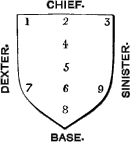

Point, (fr. une partie de l'écu). (1.) The chief use of this term is to denote a position in the escutcheon. Nine points are reckoned by heralds, but practically two of these(viz. Nos. 4 and 6) are needless, and are not recognized by the French heralds. The following diagram will readily explain the terms. The most frequently used are in chief and in base, the word point being understood.
1. In Dexter chief point, (fr. au canton dextre du chef).
2. In Middle chief point, (fr. au point du chef).
3. In Sinister chief point, (fr. au canton sénestre du chef).
4. In Honour, or Collar point.
5. In Fesse point, (fr. au centre de l'écu, or 'en l'abîme,' or 'en cœur.')
6. In Nombril point.
7. In Dexter base point, (fr. au canton dextre de la pointe).
8. In Middle base point, (fr. à la pointe).
9. In Sinister base point, (fr. au canton senestre de la pointe).
Party per bend indented or and azure; in sinister chief a pelican in piety between two fleurs-de-lys; in dexter base the same, all counterchanged--POYNET, Bp. of Rochester, 1550; of Winchester, 1551-53.
Vairy or and gules in the dexter corner[i.e. dexter chief point] a lion passant gardant of the last--FERRERS.
Argent, semy of trefoils two annulets braced in the nombril point sable--EATON.
Quarterly gules and vert, four pheons in cross, points to the nombril of the escucheon argent--TRUBSHAWE.
Gules, three swords conjoined at the pomels in fesse point, the blades extended to the dexter and sinister chief points, and middle base of the escutcheon argent--STAPLETON.
Gules, a bar engrailed argent between three suns or; in the collar point a demi-salmon naiant from the fesse, of the second--AULD, Scotland.
The expression in point, e.g. of swords meeting, is supposed, when no further description is added, to mean the middle base point, i.e. No. 8, but it is very unsatisfactory.
Argent, three swords conjoined in point[in pile would be better] gules--BARDEN.
In the old rolls these points are not recognized, but the term en le cauntel or corniere is sometimes used, which is equivalent to the dexter chief point.
Hugh Fitz[de John de BALLIOL], de goules ove ung escochon d'azur ove ung lion rampant d'argent coronne d'or en la corniere--Roll, temp. HEN. III.
Sire William de TRACY, de or ij bendes de goules; en le cauntel un escalop de sable--Roll, temp. ED. II.
Point, (2.) (fr. la pointe): the term is sometimes used to signify a portion of the shield parted off at the base by a plain or compound line, just as the upper portion is treated when a chief is borne. If the partition line is drawn straight across it forms a plain point, but the line may be wavy, indented, &c.: if it is chevron shaped the point may be described as pointed, or in point or enty(q.v.) (which is sometimes badly spelt ampty). The best known example occurs in the Royal Arms of GEORGE I.
At the same time the French pointe frequently signifies a figure rising up quite to the chief point, like a pile reversed, and so the term pointé is used to signify that the shield is divided by lines forming that figure.
D'azur, à la pointe d'argent--SAINT BLAISE DE BRUGNY.
D'azur, à l'aigle naissante d'or coupé d'argent, a quatre pointes de gueules--DE LANGLOIS DE SEPTENVILLE, Normandie.
The reason, perhaps, why the term point is not more frequently used is probably that when the field is parted off at the base, it is so by a mound(q.v.), or some similar device to which a definite name is applied.
Per pale barry of six, ermine and gules dexter, and azure sinister; a chief engrailed of the third; a point indented argent--ACTONLEY.
Sable, on a point wavy a lion passant or; in chief three bezants--HAWKINS, Plymouth.
Per pale or and gules, a point in point ermine; over all a cross tau azure--LISLE.
Argent, a chief gules; in base a point indented sable[otherwise per fesse indented argent and sable]--BLETHFIELD, or BLUFIELD.
Gules, two lions passant gardant in pale or[for BRUNSWICK]; impaling or, semée of hearts gules, a lion rampant azure[for LUNENBURG]; on a point in point gules a horse courant argent[for SAXONY]. On the centre an inescutcheon gules charged with the Crown of Charlemagne or[for ARCH TREASURER of the Holy Roman Empire]. The fourth quarter of the Royal Arms of GEORGE I.
In French coats of arms this kind of encroachment on the shield is much more frequent and more varied than in the English, but the English heraldic writers have adopted the French names, and in their disquisitions have not used them very consistently. The French term champagne is said to occupy one fourth of the shield, while the 'plaine' only one eighth of the shield, both being divided off the base by a line only slightly depressed in the centre. English heraldic writers describe the names champion, champaine, and shapourne, the last term being applied to any portion curved, but as there are no actual examples in English arms, their descriptions are quite valueless.
D'or, à l'olivier de sinople accosté de deux croissants de gueules; à la champagne d'azur chargé d'un brochet d'argent--BROCHANT DU BREUIL, Ile de France.
Some heralds also include under the term 'point' all the various partitions of the shield which are imagined to be abatements(q.v.), describe dexter chief corner parted off by a line bendwise as a point dexter, and in a similar way they make a point sinister; also an imaginary point dexter base, and a point sinister base. Added to these are gussets, the gore, and perhaps the flaunches(q.v.).
The example from German and Italian arms provide a still more varied field the exercise of ingenuity in blazon; e.g. the arms of CORRARO[of Karraro], Venice, (though Holme states that a similar coat was borne by the English family of HINXLEY). One or two instances are added as further specimens of extraordinary divisions of the shield.
Coupé d'argent et d'azur, vêtu de l'un à l'autre(ou coupé d'argent et d'azur à une grande lozenge de l'un à l'autre aboutissante aux quatre flancs de l'écu); [in English, Per fesse argent and azure a lozenge throughout counterchanged]--CORRARO, or KARRARO, Venice.
Per fesse argent and vert, four points counterchanged[otherwise 'Per fesse vert and argent; a lozenge in point[or throughout] counterchanged']--HINXLEY.
Mi-coupé mi-parti vers la pointe et récoupé d'argent et de gueules--FROMBERG, Bavaria.
Mi-coupé en chef failli en taillant et récoupé vers la pointe de gueules et d'argent--D'ARPO, Italy.
Mi tranché audessous du chef, mi taillé en remontant vers le chef, et retaillé au flanc de l'écu d'or et de gueules--KAWSENGEN en Misnie.
The term point is used also in other ways. Irregularly for pane or pièce in the Cross quarterpierced, §5, q.v. (where the French 'cinque points d'argent equipollés' has been literally translated); and it has been even used for the squares of chequy. Again for a shield tiercé or triparted fesswise the term three points has been used for the three divisions. Custom has sanctioned the use of the word for the termination of the label, (q.v.), and there are also charges having points, e.g. swords, spears, &c., in blazoning which the direction of those points has to be stated. There is also the Wire-drawer's point.